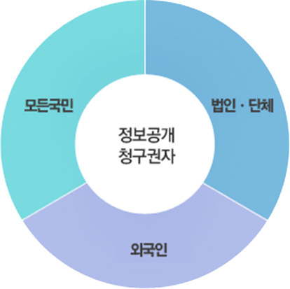

HOME > 정보공개 > 이용안내
이용안내
정보공개제도란
공공기관이 직무상 작성 또는 취득하여 관리하고 있는 정보를 수요자인 국민의 청구에 의하여 열람·사본·복제 등의 형태로 청구인에게 공개하거나 공공기관이 자발적으로 또는 법령등의 규정에 의하여 의무적으로 보유하고 있는 정보를 배포 또는 공표등의 형태로 제공하는 제도를 말합니다. 전자를 「청구 공개」라 한다면, 후자는「정보제공」이라 할 수 있습니다.
정보공개의 청구권자
- 모든 국민
모든 국민은 청구인 본인 또는 그 대리인을 통하여 공공기관에 정보공개를 청구할 권리를 가지고 있습니다. - 법인·단체
법인과 단체의 경우는 대표자의 명의로 공공기관에 정보공개를 청구할 권리를 가지고 있습니다. - 외국인
청구권이 인정되는 외국인의 범위는 다음과 같습니다.
- 국내에 일정한 주소를 두고 거주하는 자
- 학술ㆍ연구를 위하여 일시적으로 체류하는 자
- 국내에 사무소를 두고 있는 법인 또는 단체
대상정보
모든 국민공공기관이 직무상 작성 또는 취득하여 관리하고 있는
문서· 도면·사진·필름·테이프·슬라이드 및
컴퓨터에 의하여 처리되는 매체 등에 기록된 사항